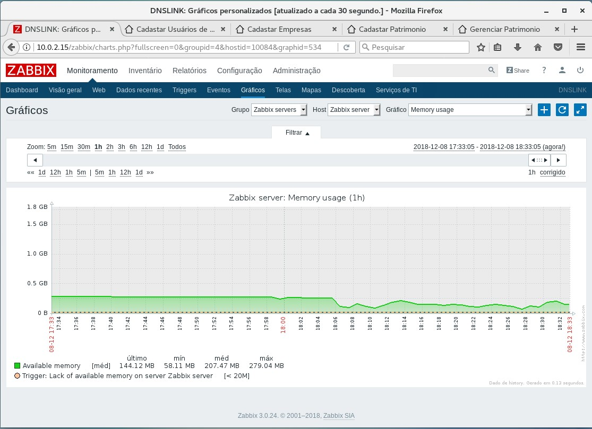

Integrantes do Projeto Integrador:
Alex Carlos,
Alexandre Silva,
Lúcio de Souza Torres,
Winder Rezende

Gerência de Redes de Computadores
O gerenciamento está associado ao controle das atividades e ao monitoramento do uso dos recursos no ambiente da rede. As tarefas básicas desta gerência, resumidamente, são: obter as informações da rede, tratá-las para diagnosticar possíveis problemas e encaminhar as soluções destes problemas.
Para cumprir estes objetivos, funções de gerência devem ser embutidas nos diversos componentes da rede, possibilitando detectar, prever e reagir aos problemas que por ventura possam ocorrer.
Um sistema de gerenciamento é composto de uma coleção de ferramentas para monitorar e controlar a rede, uma destas ferramentas é o Zabbix.
Monitoramento com Zabbix
Nos dias atuais o ambiente de tecnologia da Informação está cada vez mais relacionado com o negócio da empresa, com a crescente demanda de informações, as organizações precisam gerir estas informações, transformando em dados, e garantir que estes estejam disponíveis 24×7. O monitoramento poderá evitar o Downtime, fornecendo condições de agir proativamente, para evitar possíveis riscos. Agir no ambiente do cliente antes que o incidente aconteça, ter relação de tendências do ambiente de TI analisando no que investir daqui 1 mês, 1 ano, aonde será melhor aplicado o investimento, onde realmente precisa, consequentemente isso de forma geral não gerando downtime e os investimentos bem aplicados, evitando ter que investir em situações desnecessárias.
O que é o Zabbix
Zabbix é uma ferramenta que pode ser utilizada para monitorar toda sua infraestrutura de rede, além de aplicações. Ele serve justamente para você que está cansado de ficar olhando várias telas para ter certeza que tudo está funcionando corretamente com o seu servidor.
Características do zabbix
• Possui suporte a maioria dos sistemas operacionais: Linux, Solaris, HP-UX, AIX, FreeBSD, OpenBSD, NetBSD, Mac OS X, Windows, entre outros;
• Monitora serviços simples (http, pop3, imap, ssh) sem o uso de agentes;
• Suporte nativo ao protocolo SNMP;
• nterface de gerenciamento Web, de fácil utilização;
• Integração com banco de dados (MySQL, Oracle,PostgreSQL ou SQLite);
• Geração de gráficos em tempo real;
• Fácil instalação e customização;
• Agentes disponíveis para diversas plataformas: Linux,Solaris, HP-UX, AIX, FreeBSD, OpenBSD,SCO-OpenServer, Mac OS X, Windows 2000/XP/2003/Vista;
• Agentes para plataformas 32 bits e 64 bits;
• Integração com os Contadores de Performance do Windows;
• Software Open Source distribuído pela Licença GPL v2;
• Excelente Manual (Em Inglês) – Possui licenciamento próprio – Não GPL;
• Envio de alertas para: e-mail, Jabber, SMS;
• Scripts personalizados.
Monitorando Aplicação
A partir de agora vamos mostrar os monitoramentos feitos em sala de aula.
Monitoramentos feitos:
- Carga da CPU (unidade central de processamento);
- Utilização da CPU;
- Utilização da Memória RAM (Memória de acesso aleatório);
- Conexão de Rede;
- Performance do servidor Zabbix.
1 – Monitoramento da Carga da CPU (Sem funcionamento da aplicação)
2 – Monitoramento da Carga da CPU (Aplicação em funcionamento)

3 – Monitoramento da Utilização da CPU (Sem funcionamento da aplicação)

4 – Monitoramento da Utilização da CPU (Aplicação em funcionamento)

5 – Monitoramento da Utilização da Memória RAM (Sem funcionamento da aplicação)
6 – Monitoramento da Utilização da Memória RAM (Aplicação em funcionamento)
7 – Monitoramento da Conexão de Rede (Sem funcionamento da aplicação)
8 – Monitoramento da Conexão de Rede (Aplicação em funcionamento)
9 – Monitoramento da Performance do servidor Zabbix (Sem funcionamento da aplicação)
10 – Monitoramento da Performance do servidor Zabbix (Aplicação em funcionamento)